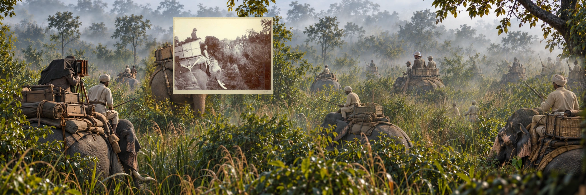

Study 02 · Nepalese Tarai · December 1911The
The
Royal Ring
A king stood above the hunt. An entire world worked beneath it.
Look first. The history can follow.Scroll / explore ↓
The expanded photograph
Look beyond the frame.
Move across the scene. Reveal the research chapters to examine enlarged details, then locate each one in the panorama.

Beyond the annotation
Interested in why royal hunting became a public performance of prestige? Explore the provisional essays alongside the evidence-graded research chapters.
Read The Performance of Power ↗Interpretive reconstruction. Named figures outside the archival print are historically researched placements, not authenticated people in a wider negative.
Our method and evidence grades ↗